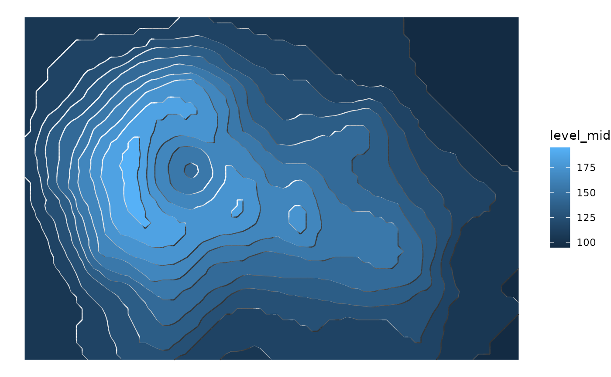
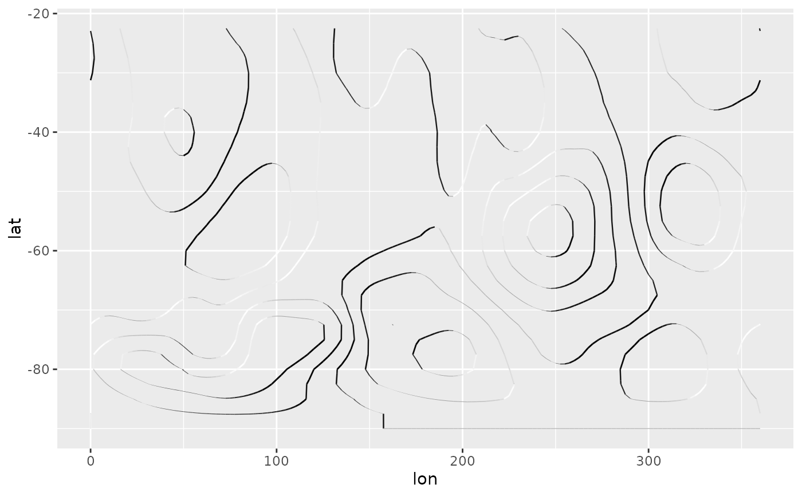
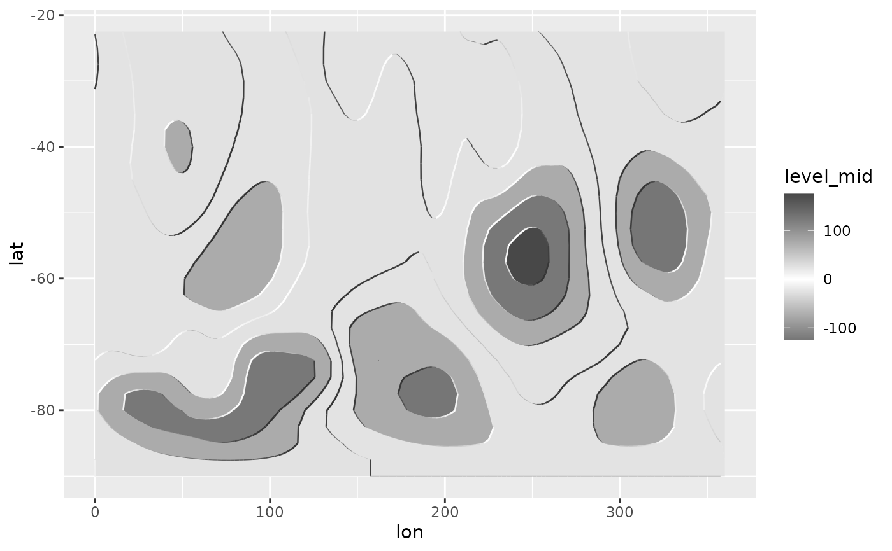
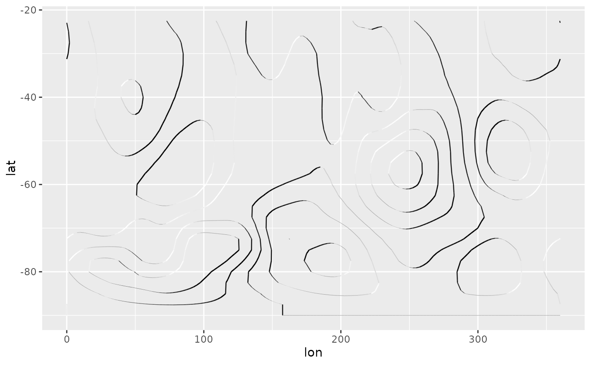
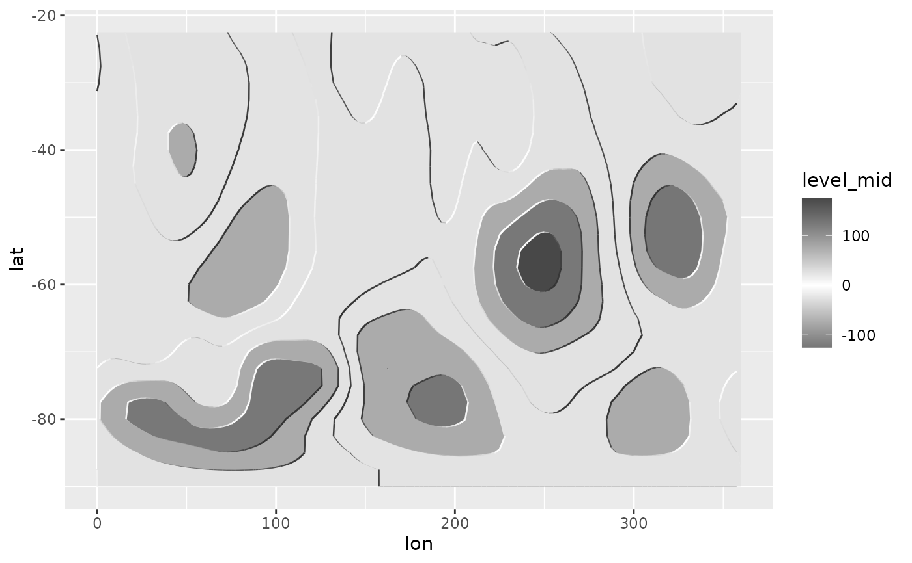

Illuminated contours (aka Tanaka contours) use varying brightness and width to create an illusion of relief. This can help distinguishing between concave and convex areas (local minimums and maximums), specially in black and white plots or to make photocopy safe plots with divergent colour palettes, or to render a more aesthetically pleasing representation of topography.
geom_contour_tanaka(
mapping = NULL,
data = NULL,
stat = "Contour2",
position = "identity",
...,
breaks = NULL,
bins = NULL,
binwidth = NULL,
sun.angle = 60,
light = "white",
dark = "gray20",
range = c(0.01, 0.5),
smooth = 0,
proj = NULL,
proj.latlon = TRUE,
clip = NULL,
kriging = FALSE,
na.rm = FALSE,
show.legend = NA,
inherit.aes = TRUE
)Arguments
- mapping
Set of aesthetic mappings created by
aes(). If specified andinherit.aes = TRUE(the default), it is combined with the default mapping at the top level of the plot. You must supplymappingif there is no plot mapping.- data
The data to be displayed in this layer. There are three options:
If
NULL, the default, the data is inherited from the plot data as specified in the call toggplot().A
data.frame, or other object, will override the plot data. All objects will be fortified to produce a data frame. Seefortify()for which variables will be created.A
functionwill be called with a single argument, the plot data. The return value must be adata.frame, and will be used as the layer data. Afunctioncan be created from aformula(e.g.~ head(.x, 10)).- stat
The statistical transformation to use on the data for this layer. When using a
geom_*()function to construct a layer, thestatargument can be used the override the default coupling between geoms and stats. Thestatargument accepts the following:A
Statggproto subclass, for exampleStatCount.A string naming the stat. To give the stat as a string, strip the function name of the
stat_prefix. For example, to usestat_count(), give the stat as"count".For more information and other ways to specify the stat, see the layer stat documentation.
- position
A position adjustment to use on the data for this layer. This can be used in various ways, including to prevent overplotting and improving the display. The
positionargument accepts the following:The result of calling a position function, such as
position_jitter(). This method allows for passing extra arguments to the position.A string naming the position adjustment. To give the position as a string, strip the function name of the
position_prefix. For example, to useposition_jitter(), give the position as"jitter".For more information and other ways to specify the position, see the layer position documentation.
- ...
Other arguments passed on to
layer()'sparamsargument. These arguments broadly fall into one of 4 categories below. Notably, further arguments to thepositionargument, or aesthetics that are required can not be passed through.... Unknown arguments that are not part of the 4 categories below are ignored.Static aesthetics that are not mapped to a scale, but are at a fixed value and apply to the layer as a whole. For example,
colour = "red"orlinewidth = 3. The geom's documentation has an Aesthetics section that lists the available options. The 'required' aesthetics cannot be passed on to theparams. Please note that while passing unmapped aesthetics as vectors is technically possible, the order and required length is not guaranteed to be parallel to the input data.When constructing a layer using a
stat_*()function, the...argument can be used to pass on parameters to thegeompart of the layer. An example of this isstat_density(geom = "area", outline.type = "both"). The geom's documentation lists which parameters it can accept.Inversely, when constructing a layer using a
geom_*()function, the...argument can be used to pass on parameters to thestatpart of the layer. An example of this isgeom_area(stat = "density", adjust = 0.5). The stat's documentation lists which parameters it can accept.The
key_glyphargument oflayer()may also be passed on through.... This can be one of the functions described as key glyphs, to change the display of the layer in the legend.
- breaks
One of:
A numeric vector of breaks
A function that takes the range of the data and binwidth as input and returns breaks as output
- bins
Number of evenly spaced breaks.
- binwidth
Distance between breaks.
- sun.angle
angle of the sun in degrees counterclockwise from 12 o' clock
- light, dark
valid colour representing the light and dark shading
- range
numeric vector of length 2 with the minimum and maximum size of lines
- smooth
numeric indicating the degree of smoothing of illumination and size. Larger
- proj
The projection to which to project the contours to. It can be either a projection string or a function to apply to the whole contour dataset.
- proj.latlon
Logical indicating if the projection step should project from a cartographic projection to a lon/lat grid or the other way around.
- clip
A simple features object to be used as a clip. Contours are only drawn in the interior of this polygon.
- kriging
Whether to perform ordinary kriging before contouring. Use this if you want to use contours with irregularly spaced data. If
FALSE, no kriging is performed. IfTRUE, kriging will be performed with 40 points. If a numeric, kriging will be performed withkrigingpoints.- na.rm
If
FALSE, the default, missing values are removed with a warning. IfTRUE, missing values are silently removed.- show.legend
logical. Should this layer be included in the legends?
NA, the default, includes if any aesthetics are mapped.FALSEnever includes, andTRUEalways includes. It can also be a named logical vector to finely select the aesthetics to display.- inherit.aes
If
FALSE, overrides the default aesthetics, rather than combining with them. This is most useful for helper functions that define both data and aesthetics and shouldn't inherit behaviour from the default plot specification, e.g.borders().
Aesthetics
geom_contour_tanaka understands the following aesthetics (required aesthetics are in bold)
x
y
z
linetype
Examples
library(ggplot2)
library(data.table)
# A fresh look at the boring old volcano dataset
ggplot(reshape2::melt(volcano), aes(Var1, Var2)) +
geom_contour_fill(aes(z = value)) +
geom_contour_tanaka(aes(z = value)) +
theme_void()
# If the transition between segments feels too abrupt,
# smooth it a bit with smooth
ggplot(reshape2::melt(volcano), aes(Var1, Var2)) +
geom_contour_fill(aes(z = value)) +
geom_contour_tanaka(aes(z = value), smooth = 1) +
theme_void()

data(geopotential)
geo <- geopotential[date == unique(date)[4]]
geo[, gh.z := Anomaly(gh), by = lat]
#> lon lat lev gh date gh.z
#> <num> <num> <int> <num> <Date> <num>
#> 1: 0.0 -22.5 700 3150.467 1990-04-01 -0.5528954
#> 2: 2.5 -22.5 700 3146.000 1990-04-01 -5.0194482
#> 3: 5.0 -22.5 700 3141.833 1990-04-01 -9.1861962
#> 4: 7.5 -22.5 700 3139.467 1990-04-01 -11.5528954
#> 5: 10.0 -22.5 700 3139.967 1990-04-01 -11.0528954
#> ---
#> 4028: 347.5 -90.0 700 2696.433 1990-04-01 0.0000000
#> 4029: 350.0 -90.0 700 2696.433 1990-04-01 0.0000000
#> 4030: 352.5 -90.0 700 2696.433 1990-04-01 0.0000000
#> 4031: 355.0 -90.0 700 2696.433 1990-04-01 0.0000000
#> 4032: 357.5 -90.0 700 2696.433 1990-04-01 0.0000000
# In a monochrome contour map, it's impossible to know which areas are
# local maximums or minimums.
ggplot(geo, aes(lon, lat)) +
geom_contour2(aes(z = gh.z), color = "black", xwrap = c(0, 360))
#> Warning: 'xwrap' and 'ywrap' will be deprecated. Use ggperiodic::periodic insead.
 # With tanaka contours, they are obvious.
ggplot(geo, aes(lon, lat)) +
geom_contour_tanaka(aes(z = gh.z), dark = "black",
xwrap = c(0, 360)) +
scale_fill_divergent()
#> Warning: 'xwrap' and 'ywrap' will be deprecated. Use ggperiodic::periodic insead.

# A good divergent color palette has the same luminosity for positive
# and negative values.But that means that printed in grayscale (Desaturated),
# they are indistinguishable.
(g <- ggplot(geo, aes(lon, lat)) +
geom_contour_fill(aes(z = gh.z), xwrap = c(0, 360)) +
scale_fill_gradientn(colours = c("#767676", "white", "#484848"),
values = c(0, 0.415, 1)))
#> Warning: 'xwrap' and 'ywrap' will be deprecated. Use ggperiodic::periodic insead.
# Tanaka contours can solve this issue.
g + geom_contour_tanaka(aes(z = gh.z))

# With tanaka contours, they are obvious.
ggplot(geo, aes(lon, lat)) +
geom_contour_tanaka(aes(z = gh.z), dark = "black",
xwrap = c(0, 360)) +
scale_fill_divergent()
#> Warning: 'xwrap' and 'ywrap' will be deprecated. Use ggperiodic::periodic insead.

# A good divergent color palette has the same luminosity for positive
# and negative values.But that means that printed in grayscale (Desaturated),
# they are indistinguishable.
(g <- ggplot(geo, aes(lon, lat)) +
geom_contour_fill(aes(z = gh.z), xwrap = c(0, 360)) +
scale_fill_gradientn(colours = c("#767676", "white", "#484848"),
values = c(0, 0.415, 1)))
#> Warning: 'xwrap' and 'ywrap' will be deprecated. Use ggperiodic::periodic insead.
# Tanaka contours can solve this issue.
g + geom_contour_tanaka(aes(z = gh.z))
